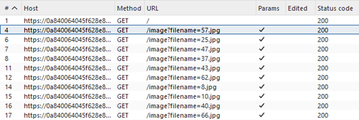
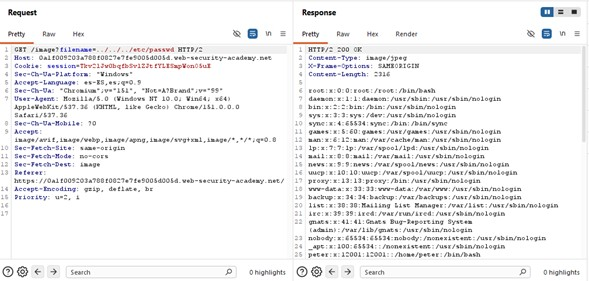
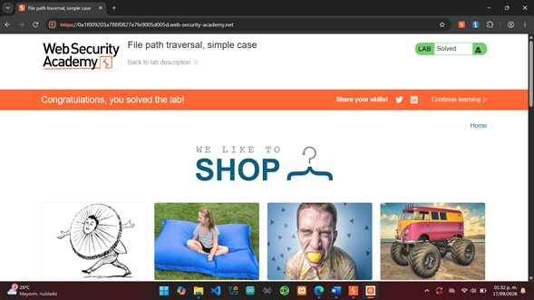

Laboratorio 01
File Path Traversal — Simple Case
Explotación controlada de una vulnerabilidad File Path Traversal mediante Burp Suite para acceder a un archivo fuera del directorio autorizado.
Objetivo
Identificar y explotar de manera controlada una vulnerabilidad de File Path Traversal presente en la carga de imágenes de una aplicación web. Mediante Burp Suite, se analizó y modificó una petición HTTP para manipular el parámetro filename utilizando secuencias de recorrido de directorios, con el objetivo de acceder al archivo /etc/passwd y comprobar la falta de validación adecuada de las rutas proporcionadas por el usuario.
Desarrollo
El laboratorio se realizó en PortSwigger Web Security Academy
utilizando Burp Suite Community Edition. Desde el navegador
integrado de Burp Suite se accedió a la instancia del
laboratorio y se analizaron las peticiones HTTP generadas por la
aplicación.
En Proxy > HTTP history se identificó que las imágenes de
los productos eran solicitadas mediante peticiones GET al endpoint
/image, utilizando el parámetro filename para especificar
el archivo que debía recuperar el servidor. A partir de este
comportamiento se seleccionó una de las peticiones para analizar
y modificar su contenido.

Análisis de la petición con Repeater
La petición seleccionada se envió al módulo Repeater,
permitiendo modificar manualmente sus parámetros y reenviarla
al servidor sin necesidad de generar nuevamente la solicitud
desde el navegador.
Dentro de Repeater se sustituyó el valor original de filename
por el payload: ../../../etc/passwd
Cada secuencia ../ permite retroceder un nivel dentro de
la estructura de directorios. Su repetición permite abandonar el
directorio destinado a las imágenes e intentar acceder al archivo
/etc/passwd.
Explotación de File Path Traversal
Después de enviar la petición modificada, el servidor respondió
con HTTP/2 200 OK y devolvió en el cuerpo de la
respuesta el contenido del archivo /etc/passwd.
El resultado confirmó que la aplicación procesaba las secuencias
de recorrido incluidas en filename sin restringir adecuadamente
el acceso al directorio destinado a las imágenes. De esta manera
fue posible acceder a un archivo del sistema ubicado fuera de la
ruta autorizada.

../../../ permite ascender varios niveles desde el directorio utilizado por la aplicación.
/etc/passwd indica el archivo del sistema que se desea recuperar.
En conjunto, el payload aprovecha la ausencia de una validación
adecuada para construir una ruta que termina apuntando a /etc/passwd.
Confirmación del laboratorio
Finalmente, PortSwigger Web Security Academy reconoció la recuperación correcta del archivo solicitado y marcó el laboratorio como Solved, confirmando que el objetivo de la práctica había sido completado satisfactoriamente.

Resultados
Se explotó exitosamente una vulnerabilidad de File Path Traversal
presente en el mecanismo de carga de imágenes de la aplicación.
Mediante la manipulación del parámetro filename con el payload
../../../etc/passwd, el servidor permitió abandonar el
directorio previsto para las imágenes y acceder al archivo
/etc/passwd.
La respuesta HTTP/2 200 OK y la visualización del
contenido del archivo confirmaron la vulnerabilidad.
Finalmente, PortSwigger Web Security Academy validó
la explotación y marcó el laboratorio como Solved.
Conclusión
El laboratorio permitió comprender de manera práctica el
funcionamiento de una vulnerabilidad File Path Traversal
y la forma en que una entrada controlada por el usuario puede
alterar la ruta utilizada por una aplicación para acceder a
archivos del servidor.
Mediante Burp Suite fue posible analizar las peticiones HTTP,
identificar el parámetro filename, modificar su valor
y observar directamente la respuesta generada por el servidor.
La recuperación de /etc/passwd demostró la importancia
de validar y restringir las rutas proporcionadas por el
usuario para evitar el acceso no autorizado a archivos.
La actividad también permitió reforzar el uso de herramientas
como HTTP History y Repeater para el análisis y modificación
controlada de peticiones dentro de pruebas de seguridad web.